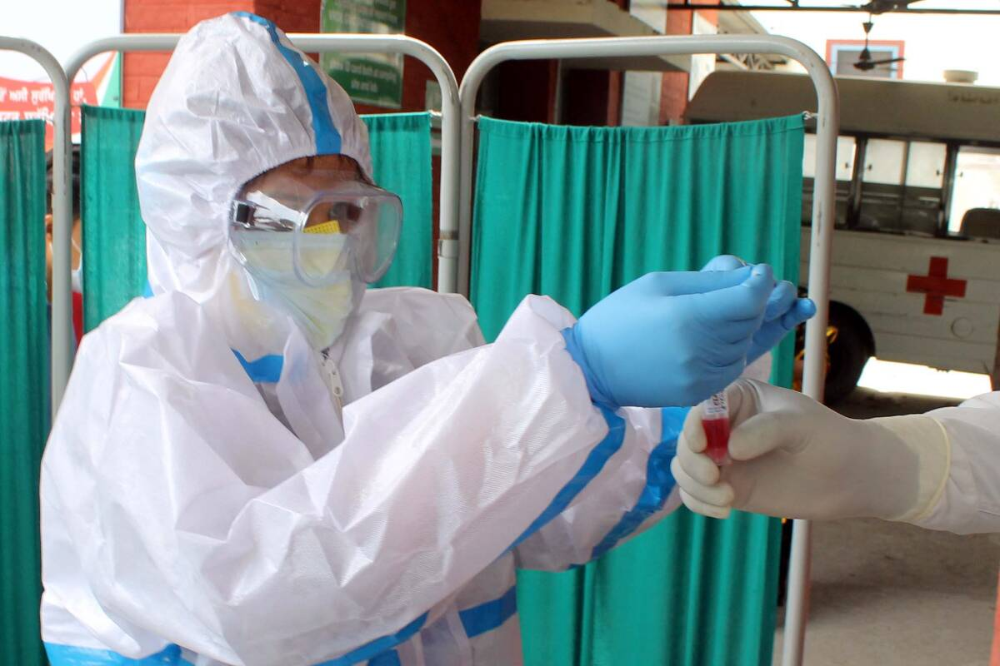

हमारे ब्लॉग में आप सभी का हार्दिक स्वागत है !

आज हम कोरोना जैसी बीमारी से बहुत ज्यादा परेशान ह। ऐसे में सभी छात्रों की परीक्षाओ में भी बदलाव आ रहे ह। सीबीएसई के द्वारा 10th की परीक्षाओ को रद करदी गई है। 12th की परीक्षाओ को जून तक बठा गया है। आगे सभी राज्यों की बैठक हो रही ह। तमिलनाडु और कई राज्यों में भी 10th की परीक्षाओ को रद करदिया गया है। 12th के छात्रों ो अभी के लिए परीक्षा सभा में बिठाया नहीं जाएगा। उनकी परीक्षाओ का निर्णय जून की स्थिति को देखकर किया जाएगा।
इस स्थिति में हमें क्या करना चाहिए?
10th के कई बच्चे इस बात से खुश हो रहे है तो कुछ दुखी हो रहे है। हमें अभी अपने स्वास्थ्य को बचाने में थ्यं देना चाहिए। परीक्षा रद हो जाए लेकिन पढाई आगे भी काम आने वाली है इससे बच्चो को ज्यादा खुश नहीं होना चाहिए आगे की तयारी सुरु कर देनी चाहिए। अगर ये घातक बीमारी ऐसे ही बढ़ती रही तो बच्चो इस साल भी ऑनलाइन माध्यम से पढाई करनी पड़ सकती है। इसके लिए बच्चो को अभी से तैयारी शुरू कर देनी चाहिए। जिससे आगे की पढाई में कोई तकलीफ न हो और बच्चे आराम से अपना अभ्यास ऑनलाइन माध्यम से पूरा कर सके।
इस स्थिति में सरकार क्या कर रही है?
सरकार हो सके उतने प्रयास कर रही है जिससे ये कोरोना घातक बीमारी हमारे देश निकल सके और सभी का
जीवन
पहले जैसा हो जाए। सरकार इसी प्रयास में जुटी हुई है , कई ठोस कदम भी उठाए गए है। जैसे कर्फ्यू लाना , जहा पर
संक्रमण ज्यादा है उस जगह पर लोकडाउन करना।
पुलिस फाॅर्स तैनात करना जिससे कही पर ज्यादा भीड़ इकठ्ठी न हो और
कोरोना फैलनेका डर कम किआ जाए। ओर भी कई कदम सरकार के द्वारा उठाए जा रहे ह। जिससे हमारा देश कोरोना से मुक्त हो
सके।
इसके लिए हम क्या कर सकते है ?
हमें देश को कोरोना मुक्त करने के लिए सरकार की मदद करनी चाहिए।
इसके लिए हमें सरकार से आने वाले सभी रूल्स और रेगुलेशंस का पालन करना चाहिए। हमें सरकार का विरोथ करने की जगह
उनका
साथ देना चाहिए जिससे जल्द हम अपने देख को कोरोना मुक्त कर सके।
-निचे दिए गए सूत्रों का पालन करना जरुरी है।
1) हमें एक साथ इकठ्ठा नहीं होना है हमेसा सोशल
डिस्टेंसिंग का
पालन करना है।
2)हमें घर से बहार निकलते मास्क लगाना जरुरी है , मास्क के बिना घर से बहार ना निकले।
3)हमेसा
साथ में sanitizer लेके घूमे, आपके आसपास अगर कोई कोरोना से संक्रमित व्यक्ति मिले तो जल्द से जल्द उसे अस्पताल
पहुंचानेका प्रयास करना चाहिए।
4)छोटे बच्चो और बूठो का ज्यादा ख्याल चाहिए।
5)दिन में चार से पांच बार
गरम
पानी की भाप लेनी चाहिए ओर काढ़े का सेवन करना चाहिए।
हमारे ब्लॉग में अ|नेके लिए आपका सुक्रिया ऐसे ही ब्लॉग देखने के लिए बने रहिए हमारे साथ।
जय हिन्द , जय भारत।